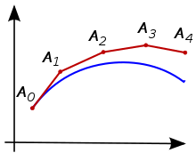

The Same-Day-Syndrome and how to use it effectively
Apr 29 '21 • Written by Yassen Shopov
📖 10 minute read
In every historical period of humanity’s long reign on earth, big events always managed to cause a global feeling of the same kind, one almost singular and universal experience that can be relatable between people of very different cultures. Just like how we find it the most natural thing to express happiness through a smile, no matter what culture we grew up in, some other experiences can also turn into shared societal phenomena. For example, and a sad example this is, the Covid pandemic made us all experience the passage of time speeding up, making the months seem like days, while the days themselves seem long and uneventful, blending together into a big time-blob.
I started seeing this meme more and more often, how people could not believe it was already April 2020, then already June, then already 2021, etc, to this very day. Depending on your place of living, you may still be under more or less severe restrictions imposed due to the pandemic, or maybe due to force of habit, you resume to live as if you’re in a lockdown. I notice it for myself as well, in the moments when I have the option to go out and, say, work from a cafe instead of my room at home, I can find it difficult to get out - the habit of staying home has become really strong since pre-Covid times. However, on the same note, this means that it becomes easier than ever to make my week interesting. The bar for an exciting experience has become a bit lower, so now a simple going out can bring much more variety to my schedule than before.
The Same-Day-Syndrome
We don’t know when we will be put through another lockdown, or when our perception of time will be altered once again. What we know, however, is that if it ever happens that a series of consecutive days happen to be very monotonous, we shouldn’t let this define our life as ‘boring’. Maybe it is just a consolation that I did for myself that my days were actually less boring than they seemed, but I developed a strategy for when I find myself losing track of time and not really experiencing life in the way I think I want to. As nerdy as it gets, I actually used a maths metaphor to explain it to myself, and it turned out to make a lot of sense - it turned out to actually be a productive way of thinking.
The basis of my theory lies in something you’ve seen in quite a few movies. The protagonist finds themselves stuck in a time loop - they wake up in the morning and experience the same day they did yesterday, and the day before, and this repetition happens again and again, throughout the whole movie. They fall asleep (or die, in the more extreme cases), and yet they open their eyes and once again start this same day anew. This happens again and again, usually, until they find a solution to some grander problem they’re having, or they defeat the antagonist, or in other words - until they succeed. In some way, we can say that we had the same experience in quarantine. Not only that, if you happen to have a rather busy work-life, you may find yourself waking up and falling asleep at the same time every day, being in the same places at the same times, and in general feeling like today is no different than yesterday.
Enough with the depressive talk though, it’s time to get to the essence of this article.
Adjusting your strategy
If we utilize this same plotline in our own lives, we can also try living the same day in slightly different ways, adjusting each day a tiny bit, or with grander steps, until we get to results we’re actually happy with. Let’s say, you wake up feeling tired. This could be due to a myriad of factors, but you can try singling them out one by one. This is also how you would otherwise achieve an efficient habit change, one tiny step at a time. Maybe you cut your coffee, just to see if that helps. Maybe it turns out the next day that this was a bad choice since now you’re feeling withdrawal syndrome - then maybe you should just reduce your consumption, instead of making it go to zero in one day. The timing of your caffeine consumption also matters - this can be the next change. Then you start changing the time you wake up, the time you fall asleep, you can reduce the ambient light in the room, the room temperature, the noises in the room. There are so many little things that can compound together into either a better or worse experience than the day before. And since these feedback mechanisms will be observed by no other than yourself, you get full control over how you change them. Thus, you get a rather surefire way of adjusting until you find some habits and rituals that help you live a better life.
This is often where data tracking comes into place. As they say, what gets measured, gets done, and it’s true. You can definitely make some progress in terms of physical fitness and diet without going on a scale once, but if you do weigh yourself every now and then, you get a better chance in noticing trends and patterns, for example, whether you’re really building muscle or you’re in a plateau. If you ask me, it would be great if we could mindlessly track every single data point in our lives, from the money we earn and spend to our calories in and out, and even other biological data which can help medics determine whether your lifestyle is pushing you to be healthier or not. However, even if there is a way to track any of this, it’s rarely automatic and it often takes effort, which many are unable to spare. However, the more information you have about yourself, observing your behaviour like a scientific experiment, the better chance you get at assuming the correct next step in any plan you have.
What is more, this strategy allows you to experiment even with things you have no past experience with, and notice the slight or big changes the next couple of days. Of course, in order to keep track of all this I’d suggest you really track it some sort of way, journaling is a good option since you can look back and see how those tiny changes compounded over time
A math analogy
Now the math thing I mentioned earlier, it’s actually not the most popular piece of maths, I hadn’t actually seen the concept before we studied it in Numerical Analysis last semester. There is a set of methods in maths and engineering, called approximation methods, which take a given problem, and try to come up with a solution as close to the real one as possible, without knowing what the real solution is at any point. It’s a formula like any other, but the key thing is that it is repeated numerous times, and with each next repetition, it gets closer to reality, no matter how far it was from the truth in the first few tries.
Another important aspect is that for those methods to work, they need to use the output from one step as the input for the next step, thus creating an adjustment procedure, where the answers keep converging into a more realistic solution. You can see this in the random graph I found on Google.
Yes, a weird metaphor, but you can use the same logic to adjust your own behaviour, and use the observations you make to turn it into a much better set of habits and routines.
So keep on nerding out, and keep on being amazing!